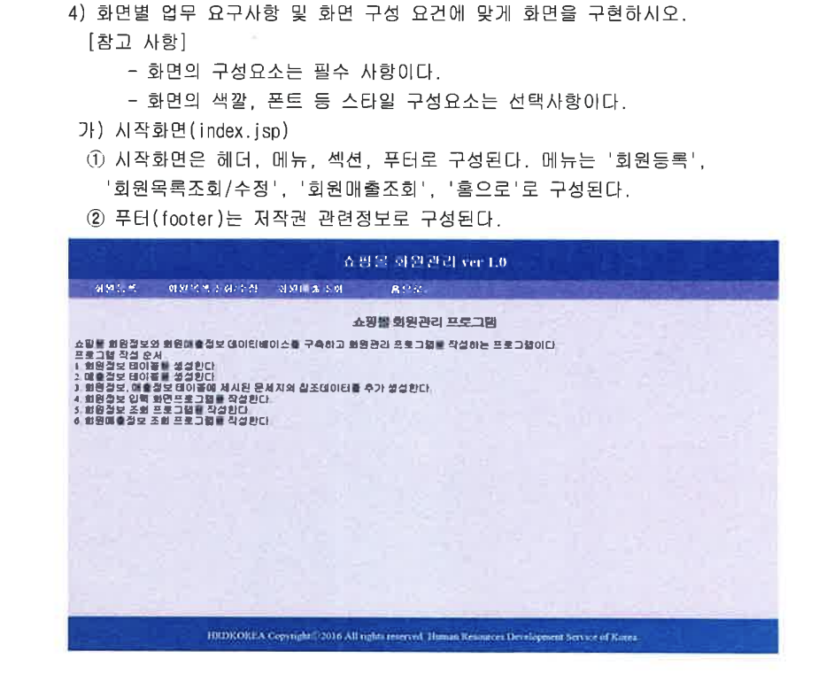
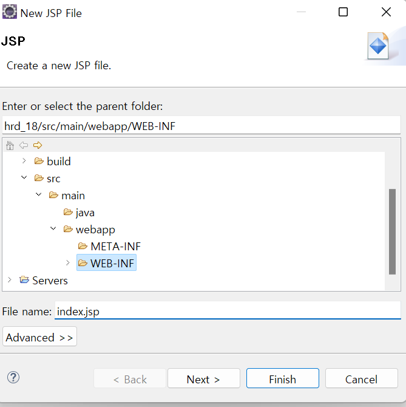
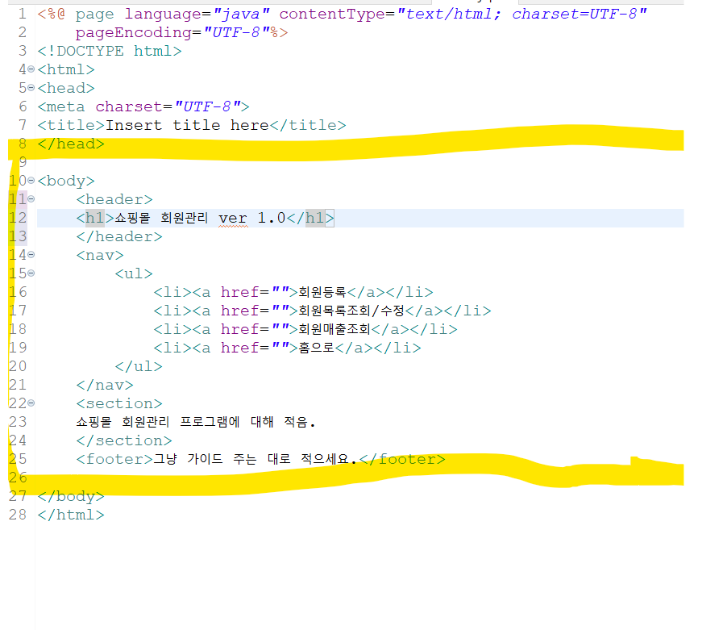
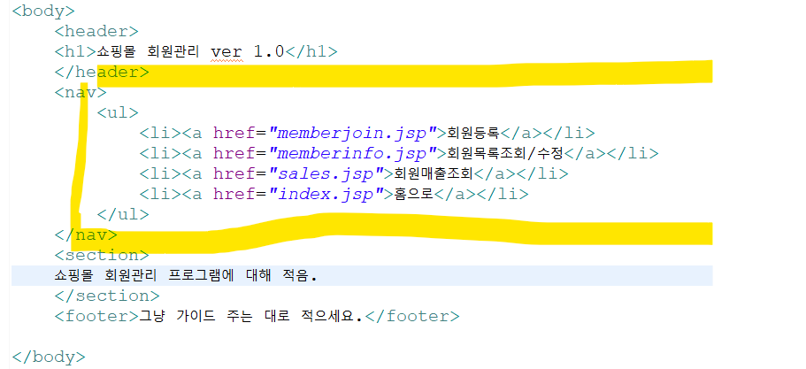
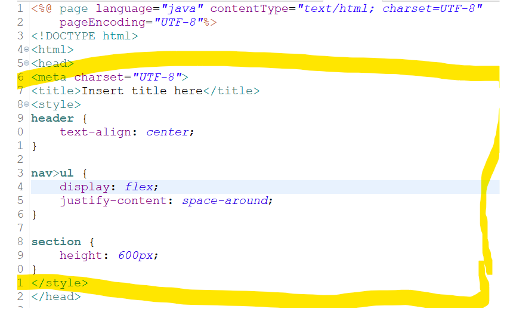
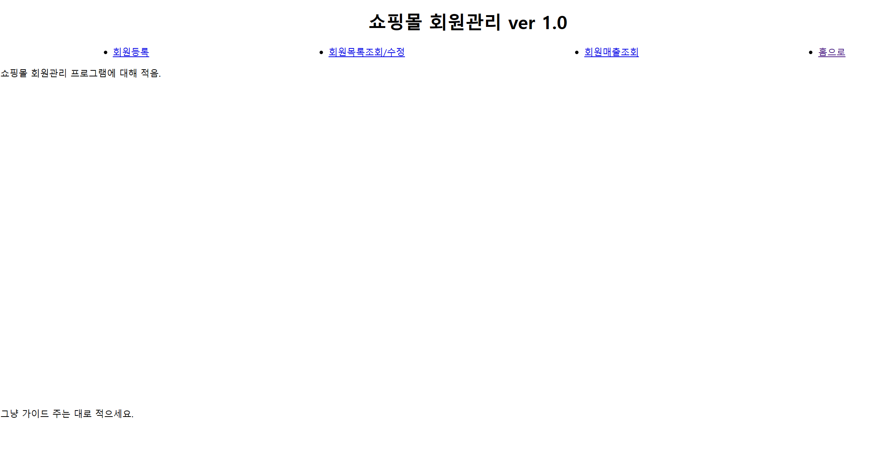
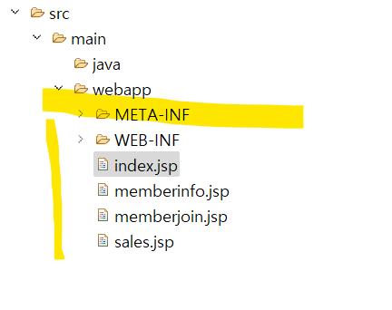

1. 문제부터 보자
앞에서 볼 수 있듯이 이 시험은 프론트 개발이 목적이 아니라 백엔드를 할 수 있냐 없냐의 시험이다.
html,css 는 금방 끝내도록 하나 구성요소는 필수 사항이니 해주자.

2. html 작업
딱히 할 게 없다. header,nav,section,footer 만들어주자.
먼저 index.jsp 파일부터 만들어준 후 section 부분을 제외한 나머지 부분을 만든 후 진행하겠다.


nav 에서 클릭시 벌어질 일들에 대해 적어주자.

3. CSS 부분에 대해서는 선택사항이니 이것만 적어도 된다 생각한다. 시간이 남는다면 색깔정도 넣어주는 정성은 보여주자.

그럼 이렇게 될 것이다.

이제 a 속성 링크를 잡아주러 jsp 파일 index.jsp 파일 복사해서 만들어주자.

테스트로 잘 되는지는 확인해 보자.